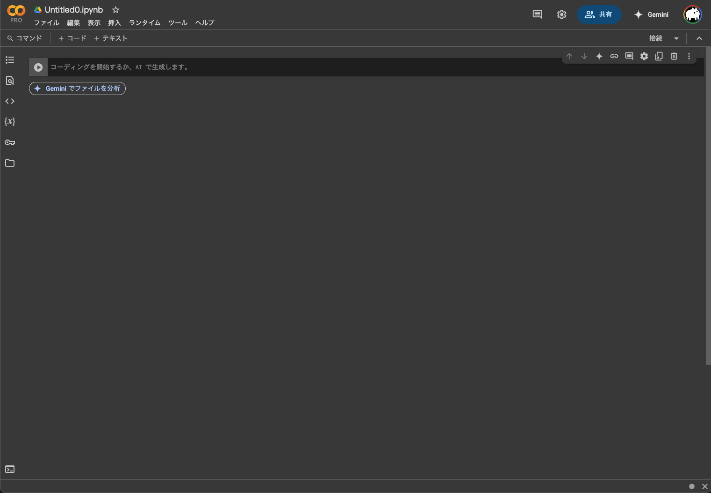

Pythonでデータを始めよう
Pythonでデータ探索を始める前に、まず理解すべき重要な概念がいくつかあります：
- PythonとGoogle Colabとは？
- Pythonでのコーディング方法は？
- Pythonパッケージとは？
これから第1章から第3章でこれらの概念を紹介します。すでにこれらの概念に多少慣れている場合は、第4章に進んで最初のデータセットである2013年にニューヨーク市(NYC)の主要3空港から出発した全国内線フライトのデータを紹介します。このデータセットは、本書の大部分で詳しく探索していきます。
PythonとGoogle Colabとは？
本書全体を通して、PythonをGoogle Colabで使用することを前提とします。初心者はこの二つを混同することがよくあります。最も簡単に言えば、Pythonは車のエンジンのようなもので、Google Colabは車のダッシュボードのようなものです。
より正確に言えば、Pythonは計算を実行するプログラミング言語であり、Google Colabは多くの便利な機能やツールを提供するインターフェースを備えた統合開発環境（IDE）です。車のスピードメーター、バックミラー、ナビゲーションシステムがあることで運転が非常に楽になるように、Google Colabのインターフェースを使うことでPythonの使用が非常に楽になります。
PythonとGoogle Colabのインストール
Google Colabに関する注意: 講師からGoogle Colabへのリンクとアクセス権が提供されている場合は、このセクションをスキップできます。ただし、Google Colabで数ヶ月作業した後、これらの手順に戻ってお使いのコンピュータにソフトウェアをインストールすることをお勧めします。
まず、PythonとGoogle Colabを設定する方法をいくつか示します：
-
Google Colabを使用する: ブラウザでGoogle Colabにアクセスします。Googleアカウントでログインするだけで利用できます。
-
自分のコンピュータにPythonをインストールする場合:
- PythonのダウンロードとインストールはPython公式サイトから行えます。
- データ分析にはAnacondaのインストールも選択肢です。
- よりシンプルな環境を求める場合はMinicondaも良いでしょう。
今回は、どこからでもアクセスでき、セットアップも簡単なGoogle Colabを使用することを前提に進めます。
Google Colabを使用したPython
以前の車の比喩を思い出してください。エンジン（Python）と直接やり取りするのではなく、ダッシュボードの要素（Google Colab）とやり取りするように、Pythonを直接使用するのではなく、Google Colabのインターフェースを使用します。
Google Colabを開くと、以下のような画面が表示されるはずです。

ノートブックには主に「コードセル」と「テキストセル」の2種類のセルがあります。コードセルにはPythonコードを書き、実行ボタンをクリックするか「Shift+Enter」を押して実行します。テキストセルはMarkdown形式で書かれ、説明文やノートを追加するために使用されます。
Pythonでのコーディング方法は？
さて、PythonとGoogle Colabのセットアップができたら、次は「Pythonをどう使うの？」と疑問に思うかもしれません。最初に覚えておきたいのは、Excel、SPSS、Minitabのようなポイント＆クリックインターフェースを提供する他の統計ソフトウェアとは異なり、Pythonはインタープリタ言語です。つまり、Pythonコードで書かれたコマンドを入力する必要があります。言い換えれば、Pythonでコーディング/プログラミングする必要があります。この本では「コーディング」と「プログラミング」という用語を互換的に使用します。
Pythonを使用するために熟練したコーダー/コンピュータプログラマーである必要はありませんが、新しいPythonユーザーが理解する必要がある基本的なプログラミングの概念セットがあります。したがって、この本はプログラミングに関する本ではありませんが、データを効果的に探索・分析するために必要な基本的なプログラミングの概念について学びます。
基本的なプログラミングの概念と用語
ここでは基本的なプログラミングの概念と用語を紹介します。これらの概念と用語をすべて今すぐ暗記するのではなく、「実践による学習」をガイドします。学習を助けるために、通常のテキストとコンピュータコードを区別するために常に異なるフォントを使用します。これらのトピックをマスターする最良の方法は、Pythonでの意図的な練習と多くの反復を通じてです。
- 基本：
- Google Colabセル: コマンドを入力する場所。
- コードの実行: セルでPythonに命令を与えることで、動作を実行するよう伝える行為。
- オブジェクト: Pythonで値が保存される場所。値をオブジェクトに代入する方法と、オブジェクトの内容を表示する方法を示します。
- データ型: 整数、浮動小数点数/数値、ブール値、文字列。整数は-1、0、2、4092のような値です。浮動小数点数または数値は整数を含むより大きな値のセットで、-24.932や0.8のような小数値も含みます。ブール値は
TrueまたはFalseのいずれかであり、文字列は「キャベツ」、「ハミルトン」、「ワイヤーは史上最高のTVショーだ」、「このラーメンはおいしい」などのテキストです。文字列は多くの場合、引用符で囲まれて示されます。
- リスト: 値のシリーズ。これらは
[]を使用して作成されます。例えば、[6, 11, 13, 31, 90, 92]は6つの正の整数値のシリーズを作成します。 - カテゴリ変数: カテゴリデータはPythonでは一般的に特別な方法で表現されます。カテゴリデータは文字列として表すこともできます。この違いについては本書を進めながら学んでいきます。
- データフレーム: 長方形のスプレッドシート。PythonではpandasライブラリのDataFrameオブジェクトとして表現され、行は観測値、列は観測値を記述する変数に対応します。データフレームについては第4章で説明します。
- 条件文:
- Pythonでの等値比較は
==を使います（=ではなく、これは通常、代入に使用されます）。例えば、2 + 1 == 3は2 + 1を3と比較し、正しいPythonコードですが、2 + 1 = 3はエラーを返します。 - ブール代数:
True/Falseステートメントと<（未満）、<=（以下）、!=（等しくない）などの数学演算子。例えば、4 + 2 >= 3はTrueを返しますが、3 + 5 <= 1はFalseを返します。 - 論理演算子:
andは「かつ」を表し、orは「または」を表します。例えば、(2 + 1 == 3) and (2 + 1 == 4)は両方の節がTrueではないため（最初の節だけがTrue）、Falseを返します。一方、(2 + 1 == 3) or (2 + 1 == 4)は2つの節のうち少なくとも1つがTrueであるため、Trueを返します。 - 関数: 関数はPythonでタスクを実行します。入力として引数を取り、出力を返します。関数の引数を手動で指定するか、関数のデフォルト値を使用することができます。
- 例えば、Pythonの
range()関数は数字のシーケンスを生成します。もしrange(1)を実行すると、値0を返します。これはあまり役に立たないようですが、デフォルト引数がrange(start=0, stop=1)のように設定されているためです。異なる動作にするためにstartとstopの値を変更しない場合、Pythonはあなたが単に数値0から0までのシーケンスが欲しいと仮定します。=記号の後に値を更新することで引数の値を変更できます。range(start=2, stop=6)を試してみると、2, 3, 4, 5という結果が得られます。 - この本を通してたくさんの関数を扱い、その挙動を理解するための練習をたくさん行います。関数について言及するときは、上記の
range()のように関数名の後ろに()を付けて示します。
これはPython熟練ユーザーになるために必要なすべてのプログラミングの概念と用語の網羅的なリストではありません。そのようなリストは非常に大きくなり、特に初心者には役に立たないでしょう。むしろ、これは始める前に知っておく必要があるプログラミングの概念と用語の最小限のリストだと考えています。残りは進みながら学ぶことができます。これらの概念と用語のすべてをマスターするには、より多くの練習をすることで構築されていくでしょう。
エラー、警告、メッセージ
新しいPythonとGoogle Colabユーザーを威嚇するものの一つは、エラー、警告、メッセージがどのように報告されるかです。Pythonはエラー、警告、メッセージを目立つ赤色のフォントで表示し、叱られているような気分にさせることがあります。しかし、赤いテキストがセルに表示されても常に悪いことではありません。
Pythonは3つの異なる状況でエラーメッセージを表示します：
- エラー: 赤いテキストが正当なエラーである場合、「Error:…」で始まり、何が間違っているかを説明しようとします。一般的にエラーがある場合、コードは実行されません。例えば、第3章で見るように、
ModuleNotFoundError: No module named 'seaborn'というエラーが表示された場合、seabornモジュールがアクセスできないことを意味します。そのため、seabornモジュールを最初にインポートせずにseabornの機能を使用することはできません。 - 警告: 赤いテキストが警告である場合、「Warning:」で始まり、Pythonは警告がある理由を説明しようとします。一般的にコードは実行されますが、いくつかの注意点があります。例えば、第5章で見るように、2つのデータポイントが欠損値を持つデータセットに基づいて散布図を作成する場合、次のような警告が表示されることがあります：
UserWarning: Matplotlib is currently using module://ipykernel.pylab.backend_inline, which is a non-GUI backend, so cannot show the figure.。Pythonは残りの非欠損値でプロットを生成しますが、2つのポイントが欠けていることを警告します。 - メッセージ: 赤いテキストが「Error」または「Warning」で始まらない場合、それは単なる親切なメッセージです。これらのメッセージは、今後の第3章でPythonパッケージをインポートするとき、または第5章で
pd.read_csv()関数でスプレッドシートファイルに保存されたデータを読み込むときに表示されます。これらは役立つ診断メッセージであり、コードの動作を妨げるものではありません。また、pip installを使用してパッケージをインストールするときにもこれらのメッセージが表示されます。
コンソールに赤いテキストが表示されても、パニックにならないでください。必ずしも何か問題があるという意味ではありません。むしろ：
- テキストが「Error」で始まる場合は、その原因を突き止めます。エラーは赤信号のように考えてください：何かが間違っています！
- テキストが「Warning」で始まる場合は、心配すべきことかどうかを確認します。例えば、散布図に欠損値があるという警告が表示され、欠損値があることを知っている場合は問題ありません。それが驚きである場合は、データを調べて何が欠けているのかを確認します。警告は黄色信号のように考えてください：すべてが正常に動作していますが、注意/注目してください。
- それ以外の場合、テキストは単なるメッセージです。それを読み、Pythonに手を振り返し、話しかけてくれたことに感謝します。メッセージは青信号のように考えてください：すべてが正常に動作していて、そのまま続けてください！
コーディングを学ぶためのヒント
コーディング/プログラミングを学ぶことは、外国語を学ぶことによく似ています。最初は威圧的でフラストレーションがたまることがあります。そのようなフラストレーションは一般的であり、学習中に落胆を感じるのは正常です。しかし、外国語を学ぶのと同様に、努力を惜しまず、間違いを恐れなければ、誰でも学び、向上することができます。
プログラミングを学ぶ際に覚えておくと役立つヒントをいくつか紹介します：
- コンピュータは実際にはそれほど賢くないことを覚えておいてください: あなたのコンピュータやスマートフォンが「賢い」と思うかもしれませんが、実際には人々が「賢く」見えるように設計するために多くの時間とエネルギーを費やしました。実際には、コンピュータには必要なすべてを指示する必要があります。さらに、コンピュータに与える指示にはミスがあってはならず、どんな形でも曖昧であってはなりません。
- 「コピー、ペースト、修正」アプローチを取ってください: 特に最初のプログラミング言語を学ぶとき、または特に複雑なコードを理解する必要があるとき、ゼロからコードを書くよりも、既存の動作するコードを取って自分の目的に合わせて修正する方が、多くの場合はるかに簡単です。私たちはこれを「コピー、ペースト、修正」アプローチと呼びます。そのため、初期段階では、記憶からコードを書こうとするのではなく、私たちが提供した既存の例を取り、コピー、ペースト、修正して目標に合わせることをお勧めします。自信がついてきたら、このアプローチから徐々に離れ、ゼロからコードを書き始めることができます。「コピー、ペースト、修正」アプローチは、子供が自転車に乗ることを学ぶための補助輪のようなものと考えてください。慣れた後は、もう必要ありません。
- コーディングを学ぶ最良の方法は実践することです: コーディングをそれ自体のために学ぶよりも、目標を持っている場合や、特定のプロジェクト、例えばあなたが興味を持ち、あなたにとって重要なデータを分析する作業をしている場合、コーディングの学習がはるかにスムーズに進むことがわかります。
- 練習が鍵です: 外国語スキルを向上させる唯一の方法が多くの練習と会話であるのと同様に、コーディングスキルを向上させる唯一の方法は多くの練習です。心配しないでください、私たちはそうするための多くの機会を提供します！
Pythonパッケージとは？
多くの新しいPythonユーザーが混乱するもう一つの点は、Pythonパッケージのアイデアです。Pythonパッケージは追加の関数、データ、ドキュメントを提供することで、Pythonの機能を拡張します。これらは世界中のPythonユーザーコミュニティによって書かれ、インターネットから無料でダウンロードできます。
例えば、この本で使用する多くのパッケージの中には、データ可視化のためのmatplotlibとseabornパッケージ、データ操作のためのpandasパッケージ、そしてデータサイエンスのための様々なツールを含むscipyパッケージがあります。
Pythonパッケージの良い類似性は、携帯電話にダウンロードできるアプリのようなものです：
つまり、Pythonは新しい携帯電話のようなものです：初めて使用するときにある程度の機能がありますが、すべてがあるわけではありません。Pythonパッケージは、Apple App StoreやAndroidのGoogle Playから携帯電話にダウンロードできるアプリのようなものです。
この類似性を続けて、Instagramアプリで写真を編集し共有することを考えてみましょう。新しい電話を購入し、Instagramで友達と写真を共有したいとします。必要なことは：
- アプリをインストールする: あなたの電話は新しいのでInstagramアプリが含まれていないため、App StoreまたはGoogle Playからアプリをダウンロードする必要があります。これを一度行えば、当面は設定されています。アプリの更新がある場合、将来的に再度行う必要があるかもしれません。
- アプリを開く: Instagramをインストールした後、それを開く必要があります。
Instagramが電話で開いたら、友達や家族と写真を共有することができます。このプロセスはPythonパッケージを使用する場合と非常に似ています。必要なことは：
- パッケージをインストールする: これは電話にアプリをインストールするようなものです。ほとんどのパッケージはPythonをインストールしたときにデフォルトでインストールされていません。したがって、パッケージを初めて使用したい場合は、まずインストールする必要があります。パッケージをインストールしたら、新しいバージョンに更新したい場合を除いて、おそらく再インストールしません。
- パッケージを「インポート」する: パッケージを「インポート」することは、電話でアプリを開くようなものです。パッケージはGoogle Colabを起動したときにデフォルトで「インポート」されていません。使用したい各パッケージを毎回Google Colabを起動するたびに「インポート」する必要があります。
データ可視化のためのmatplotlibとseabornパッケージに対してこれらの2つのステップを実行してみましょう。
パッケージのインストール
Google Colabに関する注意: Google Colabを使用している場合、パッケージの多くはすでにインストールされています。インストールされていないパッケージは、特別なコマンドでインストールできます。
Google Colabでパッケージをインストールする方法は2つあります：簡単な方法と少し高度な方法です。まず簡単な方法から見てみましょう：
1) 左側のメニューで「ファイル」を選択
2) 「新しいノートブック」を選択して新しいノートブックを作成
3) 新しいコードセルに次のコマンドを入力：!pip install seaborn
4) 「実行」をクリックまたはShift+Enterを押して実行
これはGoogle Colabでパッケージをインストールする一般的な方法です。!プレフィックスはシステムコマンドを実行するために使われます。
それでは、データ可視化のパッケージをインストールしてみましょう：
!pip install matplotlib seaborn
多くのパッケージはGoogle Colabに既にインストールされていますが、最新バージョンにアップデートするために上記のコマンドを実行することがあります。
携帯電話のアプリと同様に、パッケージは一度だけインストールする必要があります。ただし、以前にインストールしたパッケージを新しいバージョンに更新したい場合は、前述の手順を繰り返してパッケージを再インストールする必要があります。
パッケージの読み込み
パッケージをインストールした後は、「インポート」する必要があります。つまり、それを「開く」必要があります。これはimportコマンドを使用して行います。
例えば、matplotlibとseabornパッケージをインポートするには、以下のコードをコンソールパネルで実行します。「コードを実行する」とはどういう意味ですか？以下のコードをコンソールパネルに入力するかコピー＆ペーストし、Enterキーを押します。
import matplotlib.pyplot as plt
import seaborn as sns
上記のコードを実行した後、カーソルが新しいセルの先頭に表示される場合、成功し、matplotlibとseabornパッケージが読み込まれ、使用できる状態になっています。ただし、「エラーメッセージ」が表示された場合...
ModuleNotFoundError: No module named 'seaborn'
...パッケージのインストールが成功していないことを意味します。これは、エラーメッセージの例です。このエラーメッセージが表示された場合は、パッケージのインストールに関するセクションに戻り、続行する前にseabornパッケージが正しくインストールされていることを確認してください。
これらのステップを繰り返して、pandas、numpy、およびscipyパッケージもインポートしてみましょう。
import pandas as pd
import numpy as np
from scipy import stats
パッケージの使用
Pythonパッケージを使用したい新しいPythonユーザーがよく犯す非常に一般的なミスは、importコマンドを使ってまず「インポート」することを忘れることです。覚えておいてください：Google Colabを起動するたびに、使用したい各パッケージをインポートする必要があります。最初にパッケージを「インポート」せずに機能を使用しようとすると、次のようなエラーメッセージが表示されます：
NameError: name 'plt' is not defined
これは、パッケージがまだインストールされていないというエラーメッセージとは異なります。Pythonはあなたがまだ「インポート」されていないパッケージの関数を使用しようとしていることを伝えています。Pythonはあなたが使用している関数をどこで見つければいいか分かりません。初めて使用するとき、ほとんどすべての新しいユーザーがこれを忘れ、慣れるのは少し面倒です。ただし、練習すれば覚えておくことができ、しばらくすると自然になります。
最初のデータセットを探索しよう
これまで学んだことをすべて実践し、実際のデータの探索を始めましょう！データは様々な形式で私たちの元に来ます。写真からテキスト、数字まで。この本を通して、「スプレッドシート」タイプの形式で保存されたデータセットに焦点を当てます。これはおそらく多くの分野でデータが収集され保存される最も一般的な方法です。プログラミングの概念のセクションから覚えているように、これらの「スプレッドシート」タイプのデータセットはPythonでは_データフレーム_と呼ばれます。この本を通して、データフレームとして保存されたデータを扱うことに焦点を当てます。
まず、この章に必要なすべてのパッケージをインポートしましょう。パッケージのインストールと読み込み方法については第3章を参照してください。
import pandas as pd
import numpy as np
import matplotlib.pyplot as plt
import seaborn as sns
以降の章では、その章のPythonコードを使うために必要なパッケージを常にリストアップします。
NYCフライトデータセット
多くの人が飛行機に乗ったことがあるか、乗ったことのある人を知っています。空の旅は多くの人々の生活で常に存在するようになりました。空港の出発便情報ボードを見ると、様々な理由で遅延している便が頻繁に見られます。フライトの遅延を引き起こす理由を理解する方法はありますか？
私たちは皆、可能な限り時間通りに目的地に到着したいと思っています。（空港で過ごすことを密かに愛していない限り。もしあなたがそのような人であれば、最終目的地にいることを非常に楽しみにしているふりをしてください。）この本を通して、2013年にニューヨーク市の3つの主要空港、ニューアーク・リバティ国際空港（EWR）、ジョン・F・ケネディ国際空港（JFK）、ラガーディア空港（LGA）から出発したすべての国内線に関連するデータを分析します。
まず、このデータをGitHubからダウンロードしてみましょう：
# flights data
url = "https://raw.githubusercontent.com/tomoshige/website/refs/heads/main/docs/lectures/SIWS/datasets/flights.csv"
response = requests.get(url)
data = StringIO(response.text)
flights = pd.read_csv(data)
# airlines data
url = "https://raw.githubusercontent.com/tomoshige/website/refs/heads/main/docs/lectures/SIWS/datasets/airlines.csv"
response = requests.get(url)
data = StringIO(response.text)
airlines = pd.read_csv(data)
# airports data
url = "https://raw.githubusercontent.com/tomoshige/website/refs/heads/main/docs/lectures/SIWS/datasets/airports.csv"
response = requests.get(url)
data = StringIO(response.text)
airports = pd.read_csv(data)
# planes data
url = "https://raw.githubusercontent.com/tomoshige/website/refs/heads/main/docs/lectures/SIWS/datasets/planes.csv"
response = requests.get(url)
data = StringIO(response.text)
planes = pd.read_csv(data)
# planes data
url = "https://raw.githubusercontent.com/tomoshige/website/refs/heads/main/docs/lectures/SIWS/datasets/weather.csv"
response = requests.get(url)
data = StringIO(response.text)
weather = pd.read_csv(data)
これで5つのデータフレームが利用できるようになりました：
flights: すべてのフライトに関する情報。airlines: 航空会社名と国際航空運送協会（IATA）の2文字コード（キャリアコードとも呼ばれる）を一致させる表。例えば、「DL」はデルタ航空の2文字コードです。planes: 使用された各物理航空機に関する情報。weather: 3つのNYC空港それぞれの毎時気象データ。airports: 国内目的地の名前、コード、場所。
flightsデータフレーム
まずflightsデータフレームを探索し、その構造を把握しましょう。以下のコードをコンソールで実行し、入力するか、コピー＆ペーストしてください。コンソールにflightsデータフレームの内容が表示されます。モニターのサイズによって出力は若干異なる場合があります。
flights
この出力を解説しましょう：
- これは
pandas.DataFrameです：pandas DataFrameは特定の種類のデータフレームです。この特定のデータフレームには- 行は異なる観測値に対応します。ここでは、各観測値はフライトです。
- 列は各観測値を記述する変数に対応します。
year、month、day、dep_time、sched_dep_time、dep_delay、arr_timeはこのデータセットの異なる列、つまり異なる変数です。- 次に最初の10件のフライトに対応する最初の10行の観測値のプレビューが表示されます。Pythonは最初の10行のみを表示しています。なぜなら、すべての行を表示するとあなたの画面が圧倒されてしまうからです。
残念ながら、この出力はデータをよく探索することができませんが、良いプレビューを提供します。データフレームを探索するいくつかの異なる方法を見てみましょう。
データフレームの探索
flightsのようなデータフレームに含まれるデータを把握するには多くの方法があります。問題のデータフレームを「引数」（入力）として取る4つの関数を紹介します。また、データフレームの特定の列を探索するための4番目の方法も含めます：
.head()メソッドを使用すると、データフレームの最初の数行を表示します。.info()メソッドは、データフレームの構造に関する情報を表示します。これはpandasパッケージに含まれています。.describe()メソッドは、数値データに関する基本的な統計情報を表示します。[]「インデックス演算子」を使用すると、データフレーム内の単一の変数/列を表示できます。
1. .head():
Google Colabでセルにflights.head()を入力して実行します。この結果のビューアでこのデータフレームを探索してください。データフレームを確認する習慣をつけるべきです。
flights.head()
2. .info():
データフレームを探索する2番目の方法は、pandasライブラリに含まれる.info()メソッドを使用することです。このメソッドはデータフレームを探索するための別の視点を提供します：
flights.info()
.info()は各変数のデータ型と非欠損値の数を示します。ここで、int64とfloat64は「整数」と「浮動小数点数」を指し、これらは数値/数値変数のコンピュータコード用語です。
対照的に、objectは「オブジェクト」を指し、テキストデータのコンピュータ用語です。ほとんどの形式では、carrierやoriginなどのテキストデータはカテゴリ変数です。time_hour変数は別のデータ型です：日付と時刻の組み合わせを表します。ただし、この本では日付と時刻は扱いません。
3. .describe():
データフレーム全体を探索する3番目の方法は、.describe()メソッドを使用することです。これを使って航空会社のデータを2つの方法で探索してみましょう：
airlines.describe()
一見すると、出力にあまり違いがないように見えるかもしれません。ただし、レポートを作成するためのツールを使用する場合、後者のコードは読みやすく、読者に優しい出力を生成します。
4. [] 演算子
最後に、[]演算子を使用すると、データフレーム内の単一の変数を抽出して探索できます。例えば、次のようにコンソールで実行してください：
airlines['name']
[]演算子を使用して、name変数のみを抽出し、長さ16のシリーズとして返しました。データフレームを探索するために[]演算子を頻繁に使用することはなく、代わりに.head()と.info()関数を好みます。
識別変数と測定変数
データフレームで遭遇する変数の種類には微妙な違いがあります。識別変数と測定変数があります。例えば、.info()を使用してairportsデータフレームを探索してみましょう：
airports.info()
変数IATAとnameは識別変数と呼ばれるもので、各観測単位を一意に識別する変数です。この場合、識別変数は空港を一意に識別します。このような変数は、主にデータフレーム内の各行を一意に識別するために実践で使用されます。IATAは各空港のIATA（国際航空運送協会）コードを示し、name変数は空港の正式名称を提供します。残りの変数（latitude、longitude、altitude、timezone、DST、tz）は多くの場合測定または特性変数と呼ばれます：各観測単位のプロパティを記述する変数です。例えば、latitudeとlongitudeは各空港の緯度と経度を示します。
さらに、時には単一の変数が各観測単位を一意に識別するのに十分ではない場合があります：変数の組み合わせが必要になることがあります。絶対的なルールではありませんが、整理のために、識別変数をデータフレームの左端の列に配置することが良い習慣とされています。
ヘルプファイル
Pythonのもう一つの良い機能は、様々な関数とデータセットのドキュメントを提供するヘルプ機能です。関数またはデータフレームの名前の前に?を追加し、コンソールで実行することでヘルプファイルを表示できます。そうすると、対応するドキュメンテーションが存在する場合、それを示すページが表示されます。例えば、flightsデータフレームのヘルプファイルを見てみましょう。
# Google Colabのマジックコマンドを使用
?flights
または
# help関数を使用
help(flights)
ヘルプ情報はGoogle Colabのヘルプパネルにポップアップするはずです。Pythonパッケージに含まれる関数やデータフレームについて質問がある場合は、すぐにヘルプファイルを参照する習慣を身につけるべきです。
結論
Pythonでデータを探索するために、私たちが最低限必要なツールセットを提供しました。この章にあなたが知る必要のあるすべてが含まれていますか？絶対にそうではありません。この章にすべてを含めようとすると、章が非常に大きくなり、役に立たなくなってしまいます！先ほど述べたように、ツールボックスに追加する最良の方法は、Google Colabにアクセスし、可能な限りコードを実行して書くことです。
追加リソース
コーディング、Python、Google Colabの世界に不慣れで、より詳細な紹介が役立つと感じる場合は、「Python for Data Science Handbook」や「Python Data Science Tutorials」などのリソースをチェックすることをお勧めします。これらには学習しながら従うことができるチュートリアルが含まれています。
今後の内容
次に「pandasによるデータサイエンス」の部分に進みます。データサイエンティストのツールボックスで最も重要なツールだと感じるものからです：データ可視化。引き続き、データ可視化のためのmatplotlibおよびseabornパッケージを使用して、pandasパッケージに含まれるデータを探索します。データ可視化はデータ探索のための強力なツールであり、.head()および.info()関数が提供できる以上の洞察を提供することがわかるでしょう。